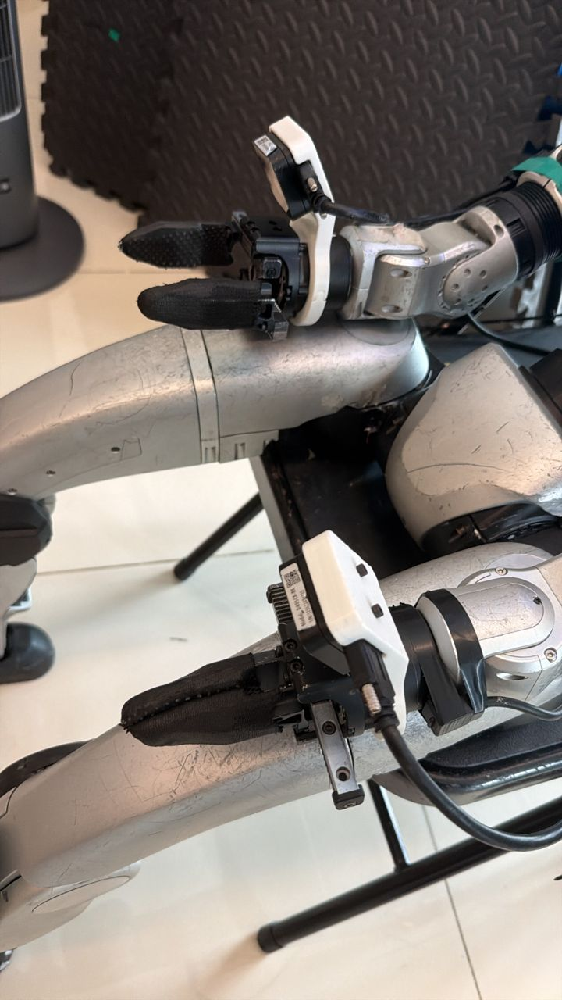
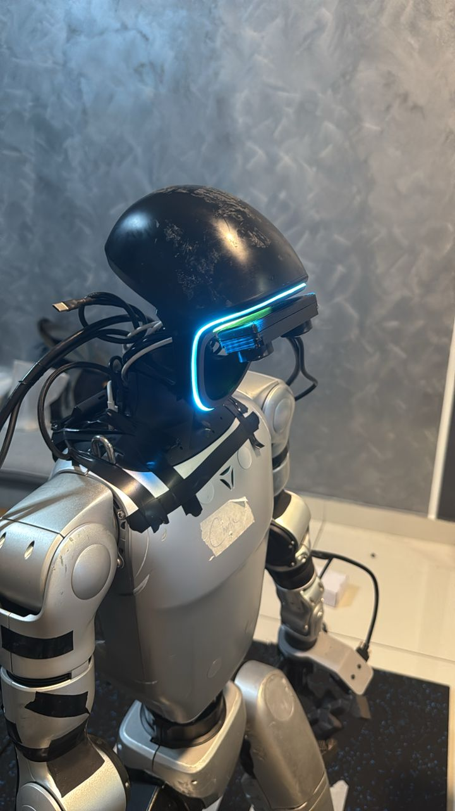

Overview
Built for learning from real homes, not lab-only scenes.
In-The-Wild Humanoid Dataset focuses on task execution in natural environments where layout, object state, lighting, clutter, and human operating style vary from episode to episode.
The dataset is collected in real homes in Southeast Asia through human whole-body teleoperation of Unitree G1, providing demonstrations for mobile manipulation, bimanual interaction, and long-horizon household skills.
Hardware
Acquisition setup
The hardware stack uses grippers for household manipulation, with a head camera and wrist-mounted cameras for visual observations.


01
Gripper manipulation
End-effector grippers are used for household grasping, placing, and object interaction.
02
Head camera
Head-mounted camera provides a wider scene view for task context and navigation.
03
Hand stereo IR cameras
Wrist-mounted stereo IR cameras capture close-range observations around the robot hands.
Dataset
What data is collected?
Each episode records human whole-body teleoperation of Unitree G1 in real homes, combining camera streams, robot states, action traces, and language annotations.
Head camera
Wrist camera
State and actions
Metadata
Dataset Statistics
Task Coverage
- Building children table
- Hang hanger
- Clean up the room
- Setting the table
- Restocking fridge
- Kitchen organization
- Hang keys on a hook
- Move pillow to sofa
- Sweep floor
- Picking trash
- Clothes washing
Task Episodes
Average Duration
Subtask Labels
Every robot subtask is annotated with a fine-grained action label. Hover tiles for details.
Roadmap
Open Source timeline
Release V1: 500+ hours of data
Release more tasks and environments
LeRobot Integration
We host the dataset on Hugging Face in two formats: raw ROS bag / MCAP recordings and a version in LeRobot format for robot learning workflows.
Citation
@misc{in_the_wild_humanoid_dataset_2026,
title={In-The-Wild Humanoid Dataset: A Large-Scale In-The-Wild Dataset for Robot Learning},
author={BitRobot and Unitree and Hugging Face},
year={2026},
howpublished={\url{https://bitrobot-foundation.github.io/in-the-wild-humanoid-dataset/}}
}License Humanoid Data for Training & Evaluation
Need more coverage, commercial rights, or custom data collection?
Request Data Access